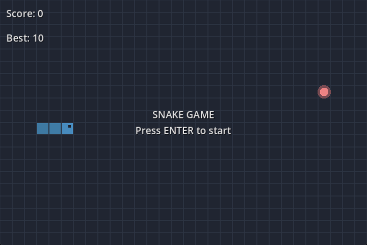

В этом пошаговом уроке вы создадите свою первую полноценную 2D-игру с помощью Godot. К концу серии у вас будет своя простая, но законченная игра "Змейка", как на изображении ниже.

Вы узнаете, как работает редактор Godot, как структурировать проект и как построить 2D-игру.
Игра называется "Змейка". Управляйте змейкой, собирайте еду, чтобы расти, и избегайте столкновения со стенами и собственным хвостом.
Вы научитесь:
И многому другому.